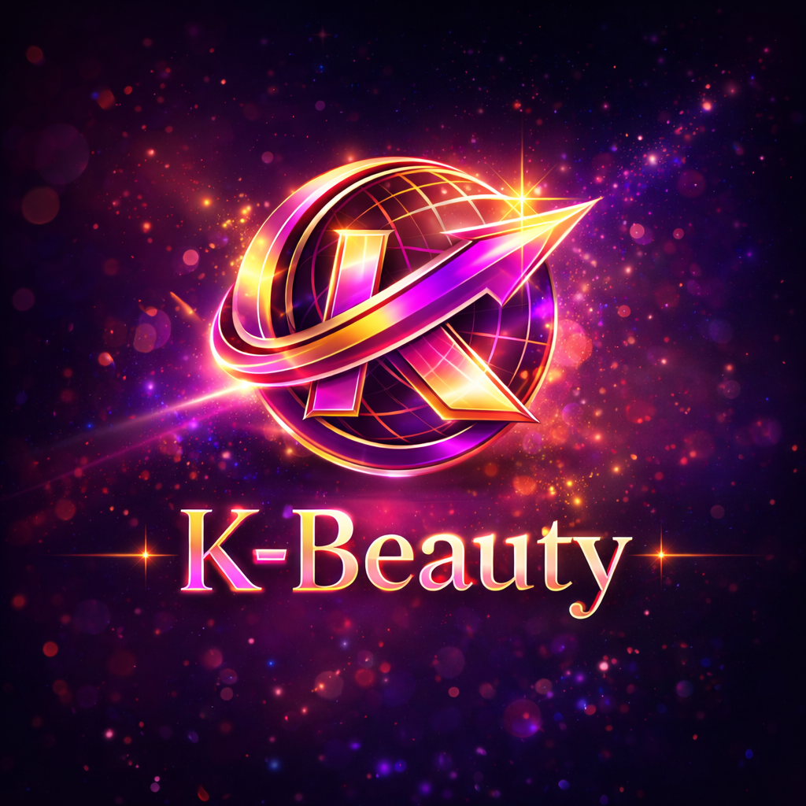

Companies
브랜드와 기업의 성장 전략.

Beauty, as an industry. 뷰티를 넘어 산업의 구조를 봅니다.
다음 K-Beauty 승자를 발견하고,
성장의 이유를 숫자와 취재로 설명합니다.
K-Beauty는 제품 리뷰보다 산업의 구조에 집중합니다. 브랜드와 기업, 자본, 기술, 제조·유통, 미용의료, 글로벌 시장을 하나의 비즈니스 생태계로 봅니다.
브랜드와 기업의 성장 전략.
투자·M&A·기업가치와 자본의 이동.
뷰티테크와 산업을 바꾸는 기술.
미용의료·의료기기 산업의 변화.
ODM·OEM·원료·패키징·유통.
한국 브랜드의 글로벌 확장.
A newsroom built for
the business of beauty.